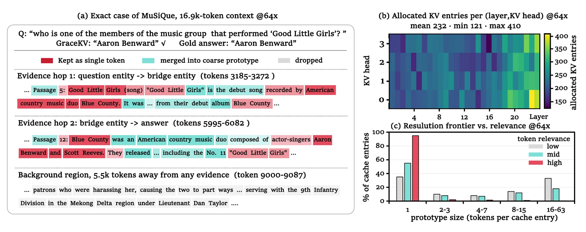
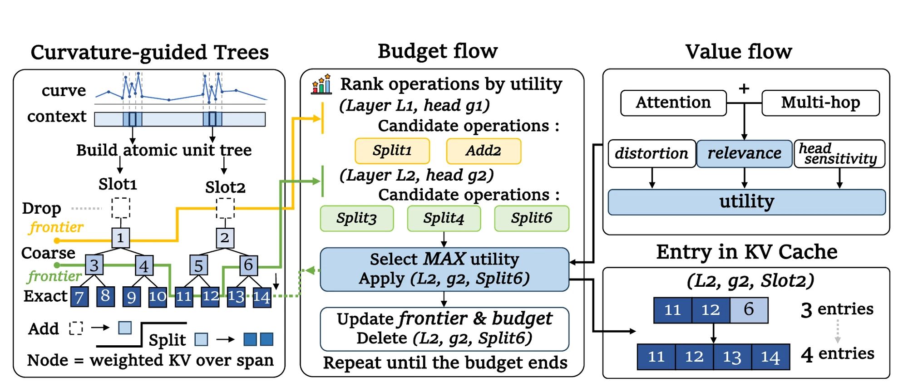
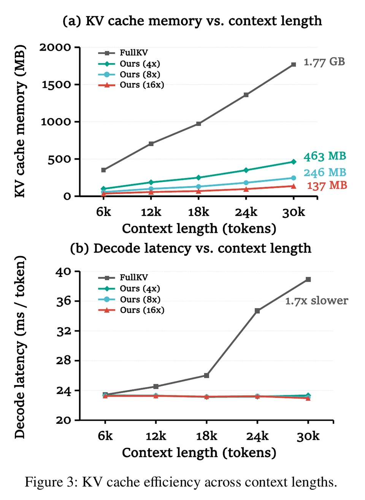

Add a new region
One root prototype makes an entire context slot visible to a particular layer and KV head.
arXiv 2026Machine Learning
Every Cache Entry Earns Its Place: Global Allocation of Resolution and Coverage for KV Cache Compression
Tsinghua University, Beijing, China
Core idea
Under a fixed physical cache budget, the next K/V entry can cover a region that is currently absent, or refine a region that is already represented. GraceKV makes those two choices directly comparable.
One root prototype makes an entire context slot visible to a particular layer and KV head.
A Split replaces one coarse prototype with its preselected child set, spending extra entries only where detail is worth it.
Compression happens after one standard prefill pass. There is no extra model forward, no additional training, and no mask pretending that removed entries still exist.
Layers, KV heads, and slots do not receive fixed slices of the budget before the input is understood.
The same passage may deserve different coverage and resolution in different layer-head pairs.
“Global” describes the scope of the auction. It does not claim exact combinatorial global optimality.
A concrete case
The question asks for a member of the group that performed “Good Little Girls.” The answer is not in the first matching passage: the model must follow a two-hop evidence chain from the song to Blue Country, then to Aaron Benward.

Original token-level K/V for names, numbers, labels, or other sharp evidence.
One prototype preserves a span coarsely when broad context matters more than every local detail.
No physical cache entry is written for that slot in that particular layer-head pair.
Method
GraceKV first builds a common structural vocabulary for coverage and resolution. It then estimates what the current input needs and lets every feasible Add or Split compete in the same physical units.
01 · Curvature-guided partition
GraceKV views normalized hidden states as a trajectory along token positions. Smooth stretches can share a longer coarse representation. Stable turns across layers and window scales are better structural boundaries.
Token surprisal provides a smaller auxiliary signal, while a dynamic program also considers within-slot dispersion and reasonable slot lengths. Curvature decides where a merge is structurally safe; it does not decide which content is important to the current question.
Structure decides where to split. Relevance decides where to spend.
Default target: about 64 tokens per slot, adaptively constrained between 16 and 128.
02 · Progressively refinable representation
The slot boundaries are shared, but every (layer, KV head, slot) tuple receives its own prototype tree. A frontier is a non-overlapping set of nodes that states exactly how this atomic unit is stored.
One stored prototype keeps the whole slot addressable, but local token detail is merged.
Inside one cache entry
A coarse node represents a contiguous interval with one packed entry. GraceKV makes the packed representation consistent with the decoder that will actually consume it.
Post-RoPE keys live in different rotated coordinates. GraceKV inverse-rotates them, averages in one shared frame, then applies RoPE at a representative position.
Values are weighted by task relevance, with a 10% uniform base so lower-value background information never loses all influence.
Key coherence determines how many original tokens the prototype should effectively count for, preventing an averaged “ghost key” from receiving exaggerated attention mass.
03 · Bottom-up value flow
Direct attention from question and sequence-tail probes identifies explicit evidence. Two rounds of token-to-token propagation then recover indirect dependencies, such as a bridge entity that the question does not attend to strongly on its own.
Token values sum upward through the prototype tree. A layer-KV-head sensitivity multiplier captures how strongly that component affects the model output. Curvature and surprisal are not multiplied into relevance: they shape the tree, while attention evidence values its nodes.
Children conserve their value when aggregated into a parent, so the same signal can price both coverage at the root and refinement deeper in the tree.
Exact-information safeguard
Names, numbers, labels, and few-shot output formats can have a non-smooth payoff: the exact leaf is very useful, while the intermediate splits needed to reach it may look less attractive one step at a time.
GraceKV therefore isolates a small, budget-capped set of high-value (layer, KV head, token) leaves before the main auction. The protection is neither free nor duplicated outside the tree.
The complete path cost is charged to the same hard physical budget. Shared ancestors are paid only once.
04 · Top-down budget flow
Add compares complete dropping with one-root coverage. Split compares a parent prototype with its finer child set. Both are scored per newly created cache entry, so an operation in an early layer can compete directly with a different head, slot, or resolution elsewhere.
Toy values are illustrative. The real queue spans every layer, KV head, slot, and currently exposed tree operation.
05 · Physical cache packing
Each layer-head pair receives an independently sized ragged cache. An unselected root produces no entry; an internal node stores a packed prototype; a singleton stores the original K/V. Newly generated tokens are appended with multiplicity one.
When the budget returns to FullKV scale, every tree can expand to token leaves and recover the original contextual entries exactly.
coarse prototype refined prototype exact token
Slot construction. Multi-layer, multi-scale curvature is stabilized across sampled depths and windows; surprisal is a smaller auxiliary boundary signal. Default slot length is 16–128 tokens with a target of 64.
Value flow. Question and sequence-tail probes seed direct relevance; two graph hops with default weight 0.3 recover indirect evidence. Parent values equal the sum of child values.
Prototype fidelity. Probe-based distortion weighs attention-partition error and value-aggregate error at 0.25:0.75. Tree construction considers high-curvature split candidates plus the midpoint, and may isolate a salient token with a three-way child set.
Singleton floor. Its default cap is 0.6 of the allocatable base budget, but this is a hard maximum rather than a guaranteed 60% spend. Every realized singleton pays its complete tree path cost.

Effects and practical meaning
The central result is not one isolated benchmark win. GraceKV remains competitive across tasks that demand opposite behaviors: broad coverage for summarization and aggregation, but sharp local addressability for question answering and retrieval.
Broad, lower-resolution coverage prevents entire topics or sections from disappearing.
Names, values, and evidence hops need exact or finely split entries amid long distractor context.
Demonstration structure benefits from coverage, while labels and answer formats benefit from singletons.
Qwen2.5-7B-Instruct. F1 for QA; Rouge-L for summarization and few-shot, all ×100.
| Task | FullKV | 4× | 8× | 16× | 32× | 64× | 128× |
|---|---|---|---|---|---|---|---|
| Single-document QA | 43.95 | 42.97 | 41.58 | 38.45 | 35.57 | 31.49 | 25.81 |
| Multi-document QA | 29.86 | 30.18 | 29.90 | 28.78 | 28.18 | 27.09 | 25.19 |
| Summarization | 15.97 | 15.03 | 14.51 | 14.04 | 13.48 | 12.58 | 11.88 |
| Few-shot | 36.23 | 35.82 | 34.77 | 33.92 | 33.80 | 33.18 | 32.83 |
How to read the quality curve
At 4×, every LongBench category retains at least 94% of its FullKV row score. At 16×, the four categories retain roughly 87–96%. The 128× setting is a deliberate stress test: useful behavior remains, but the loss becomes strongly task-dependent.
Descriptive ratios computed within each published table row; they are not a universal quality guarantee.
Precise retrieval under a shrinking budget
RULER set recall checks whether every distant target is recovered, making it a strict test of local addressability rather than approximate semantic similarity. In this Qwen2.5-7B-Instruct Retrieval setting, moving from 4× to 16× costs 1.00 point, while moving from 16× to 32× costs 9.75 points.

Efficiency at 30K context
That is roughly 74%, 86%, and 92% less KV-cache memory at 4×, 8×, and 16×. In practice, this headroom can make longer contexts or larger batches feasible, depending on the model weights, activations, serving stack, and available GPU memory.
Within the same 1.77 GB KV-only envelope
At the longest evaluated context in Figure 3, FullKV is up to 1.7× slower. The detailed appendix also finds GraceKV and FullKV nearly tied on some datasets under the unified decoder, so memory reduction is the robust result; speedup remains kernel- and workload-dependent.
GraceKV builds input-conditioned trees and allocates the budget once after prefill. This remains a seconds-level cost whose exact value depends strongly on context length and engineering configuration, making construction the main systems optimization target.
The tradeoff is most attractive when memory is the binding constraint, the context will support a long continuation or repeated turns, or severe compression would otherwise erase critical evidence.
What this can change in practice
Saved KV-cache bytes may support longer serviceable contexts or larger batches. These are deployment implications, not end-to-end serving measurements; realized gains also depend on model weights, activations, memory fragmentation, and the scheduler.
A smaller cache can make it feasible to keep more of a long report, contract, or paper collection resident without forcing every section to receive the same resolution. Repeated generations from the same complete prefill state can amortize construction.
Repository context, tool traces, entity names, numbers, and output formats mix broad background with a few exact facts, matching the method's coverage-versus-resolution design.
When KV memory limits admission, a smaller physical cache may let a serving system keep more sessions on device or reduce pressure to evict and offload caches. This behavior was not measured end to end in the paper.
If generation is brief, the context is small, or attention is not memory-bandwidth limited, the seconds-level construction cost can outweigh the steady-state saving. The paper therefore presents memory capacity as the primary near-term systems benefit.
What the ablations say
Citation
Tian, Haolin; Liu, Yuzhe; and Wang, Tonghan. 2026. Every Cache Entry Earns Its Place: Global Allocation of Resolution and Coverage for KV Cache Compression. arXiv:2608.07001.
@article{tian2026every,
title = {Every Cache Entry Earns Its Place: Global Allocation of Resolution and Coverage for KV Cache Compression},
author = {Tian, Haolin and Liu, Yuzhe and Wang, Tonghan},
journal = {arXiv preprint arXiv:2608.07001},
year = {2026}
}